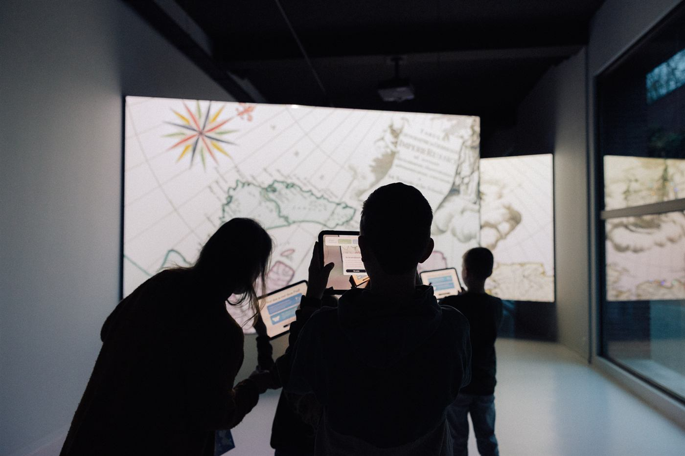

MAP museum, tablets Festival kiosk
Festival kiosk
Heritage and collections
A collection visitors walk past.
The objects are there, the research behind them is thorough, the gallery was refurbished. Still the average visitor stops for eight seconds and moves on. The message sits in the case, not in the head of the person walking by.
We build a programme that turns looking into experiencing: which single meaning has to stay, in what order, and at which moment of the visit.
Mercator, with Visit Flanders. A multi-year programme across a museum, a site and digital channels.
Mercator, Nerdland kiosk: 1,500 conversations, over 40 hours of speaking time, 30,000 festival visitors, 5% walked over to the kiosk.
Streamed via Hydra Experiencenet, our technology partner for reliable XR on location. experiencenet.com
MAP Mercator drew over 20,000 visitors in its first six months. On Mercatoreiland new visitors rose steeply, roughly tenfold, tracked by hand for now. We are currently measuring how often a visitor actually comes into contact with the heritage of the place.